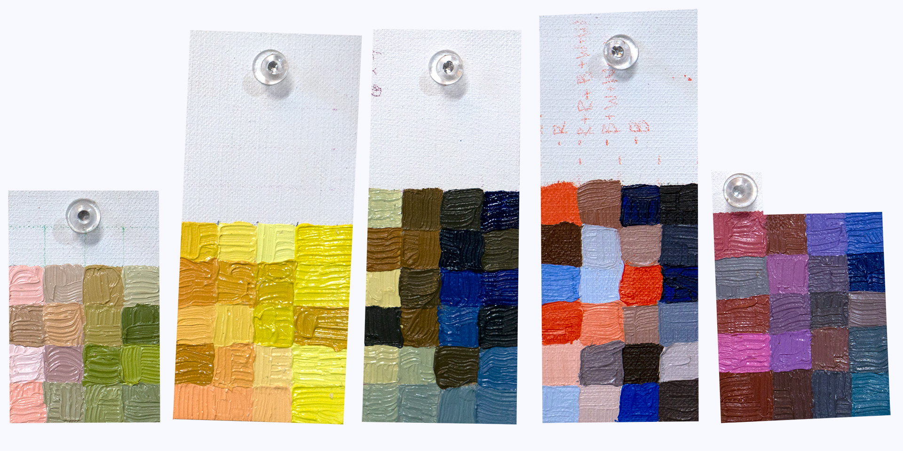

(dx*y-d*d!)(si*j)
x= width of small grid
y= hieght of small grid
d= # of dice sides
i= width of large grid
j= hieght of large grid
s= # of symmetrical transformations
_censored.jpg)
_censored.jpg)
_formula.jpg)

_censored.jpg)
_censored.jpg)
inspo
"Algorithms are among the most ancient and material practices, predating many human tools and all modern machines." (Pasquinelli 2019, 2)
karl sims | ian cheng | algorithmic pattern salon | ancient algorithms | ancient textile algorithms | carpets | graph neural networks | the laws of thought